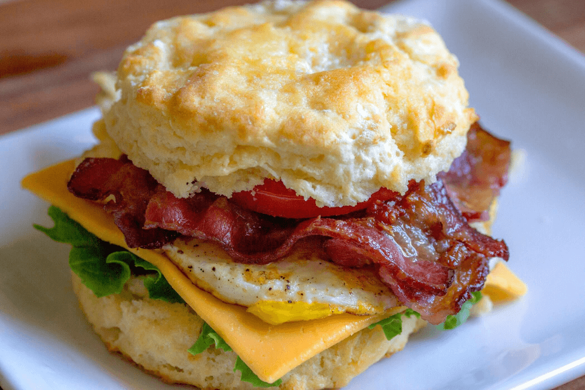
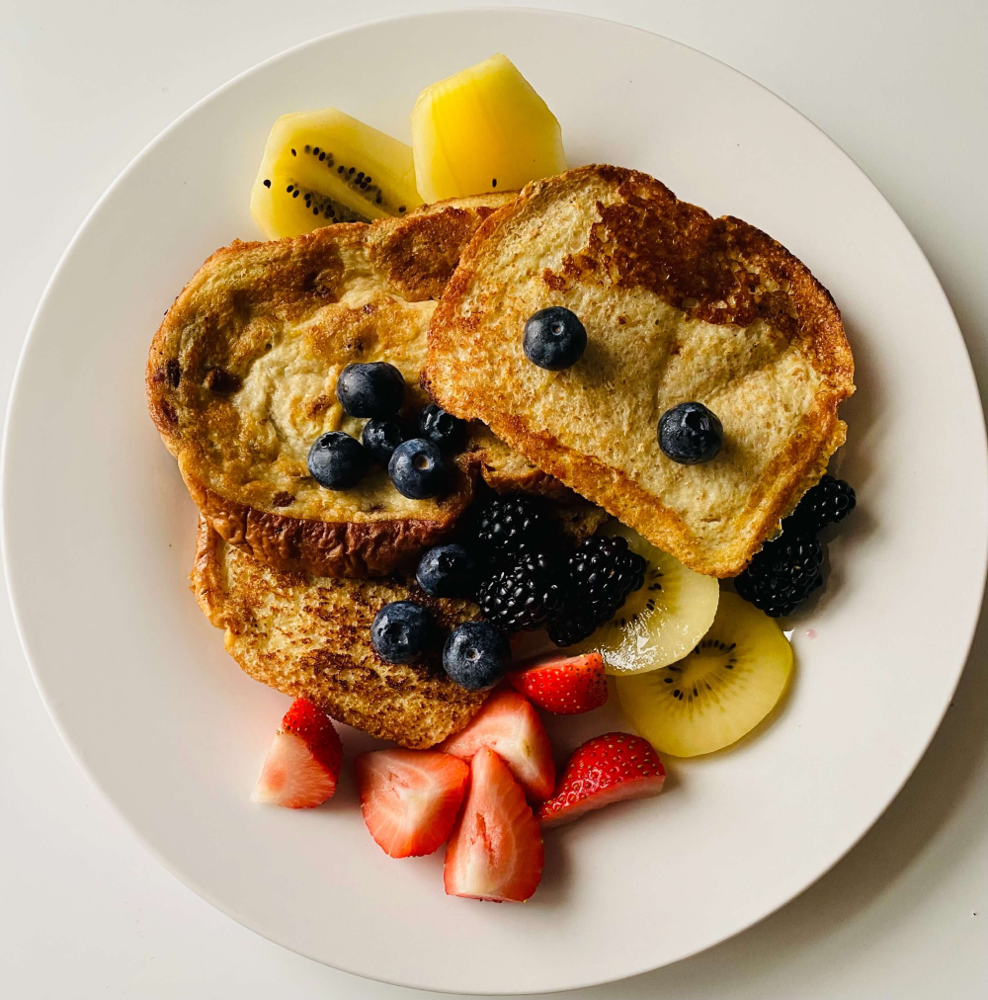
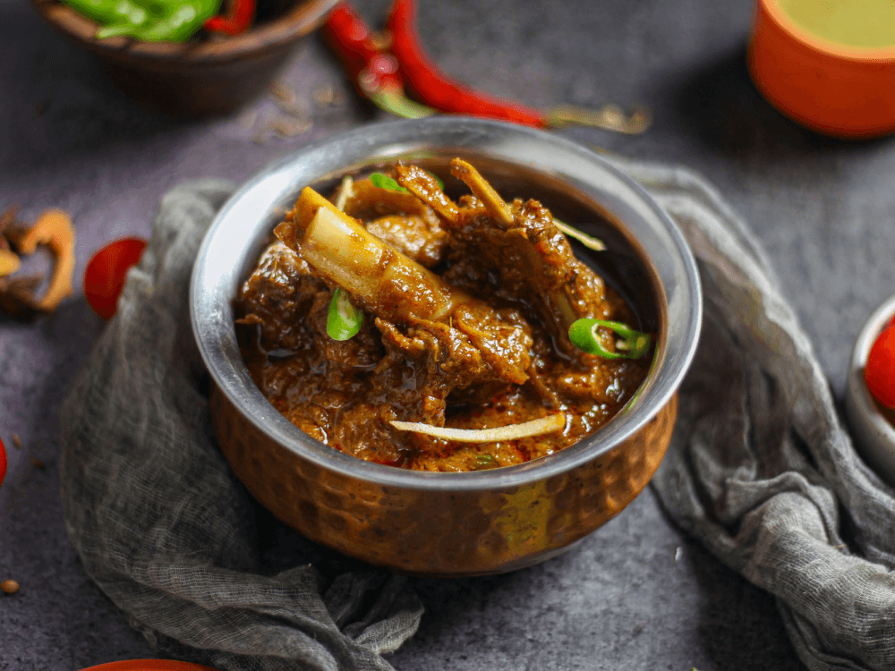
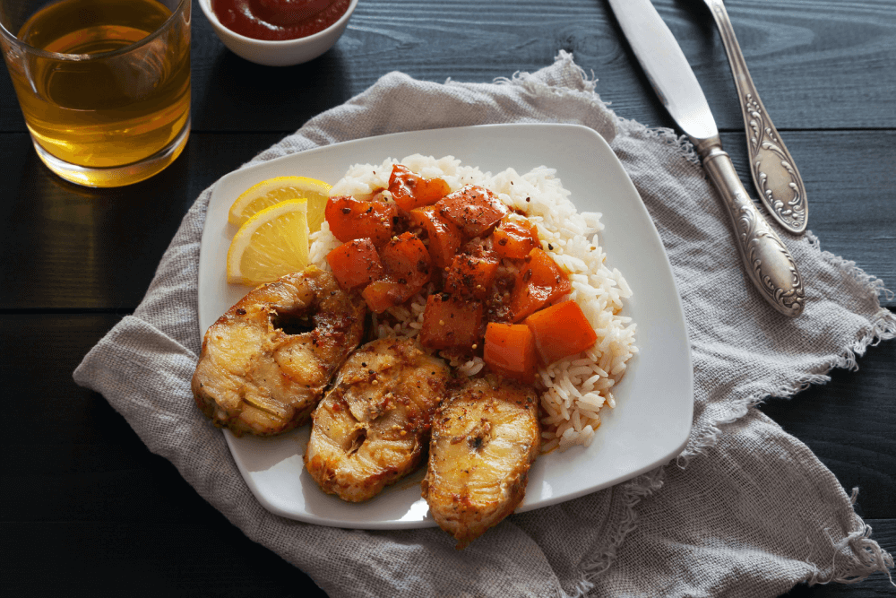
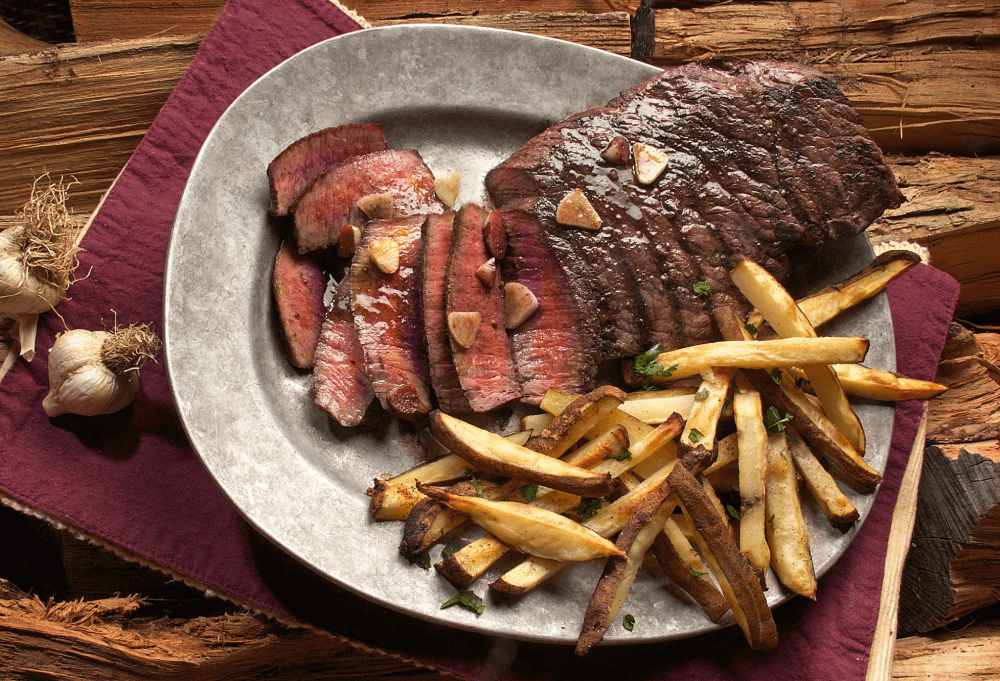
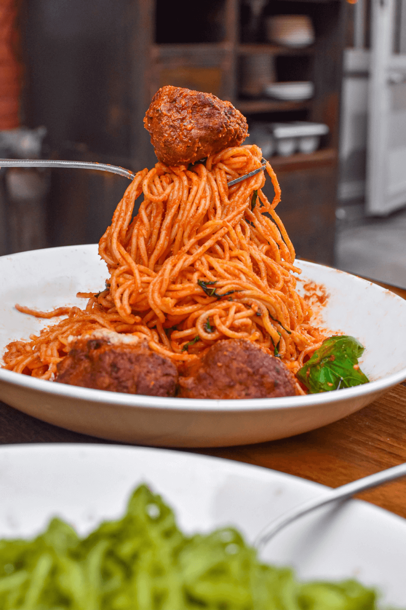

Easy Delicious Meals
Find The Best Meals Right Now That Are Fun, Delicous, And Easy To Make!
Find The Best Meals Now That Are Fun And Delicious To Make!
BREAKFAST
>

Sausage Egg Sandwich
Ingredients
- 4 Tsp. Olive Oil
- 2 thin Slices Red Onion
- 12 oz. Sweet Italian Sausage
- 2 oz. Extra-Sharp Cheddar Cheese
- 4 Large Eggs
- 4 English Muffins
- 6 Sweet Piquante Peppers
- 1/4 Cup Flat-Leaf Parsley
Instructions
- Heat 2 tsp oil on medium in cast-iron skillet.
- Shape sausage into four 1/4-inch-thick patties and add to skillet with onion.
- Flip and cook onions until they are just tender.
- Cook patties until browned then flip.
- Separate Onions into rings and place on patties, then top with Cheddar.
- Continue cooking until sausage is cooked through, 2 to 3 minutes more.
- add 2 teaspoons olive oil in skillet on medium and cook eggs to desired doneness.

Berry French Toast
Ingredients
- 6 Large Eggs
- 1 1/2 Cup Whole Milk
- 1 1/2 Tsp. Ground Cinnamon
- 1 1/2 Tsp. Pure Vanilla Extract
- 8 1-Inch-Thick Slices Challah Bread
- 4 Tbsp. Unsalted Butter
- Extra: Yogurt, Berries, and Pure Maple Syrup
Instructions
- In a large bowl whisk together eggs, milk cinnamon, and vanilla.
- Place 2 bread slices in egg mixture and let soak for 2 minutes.
- Flip and soak for 1 minute more.
- Heat 1 Tbsp. of butter in large skillet on medium-low.
- Add soaked break and cook until golden brown 1-3 minutes per side.
- While toast soakes, begin next batch of challah slices.
- Repeat with remaining butter and bread, and serve with yogurt, berries, and syrup.

Breakfast Tacos
Ingredients
- 8 Oz. Tomatillos, Discard Husk
- 1 Jalapeño
- 1 Tbsp. Olive Oil
- Kosher Salt
- 8 Small Corn Tortillas
- 6 Oz. Sharp Cheddar Cheese
- 8 Large Eggs
- 2 Cups Fresh Cilantro
- 2 Tbsp. Lime Juice
- Cooked Bacon And Radishes
Instructions
- Arange one oven rack 6 inches from broiler and one below that.
- On baking sheet, toss tomatillos and jalapeño with oil and pinch salt.
- Broil on top rack until tender, 8 to 10 minutes then transfer to blender.
- Place tortillas on second baking sheet and top each with 1/4 cup cheese.
- Top each tortillas then with one egg.
- Broil on middle rack to desired doneness, 4 to 6 minutes for runny.
- Add cilantro, lime juice, and 1/4 tsp. salt to vegetables in blender, puree till smooth.
LUNCH
>

Instant Pot Beef Curry
Ingredients
- 2 Tbsp. Canola Oil
- 1 Red Onion
- 1 Large Red Pepper
- Kosher Salt And Pepper
- 1 2-Lb Beef Chuck Roast
- 1 14.5-Oz Can Coconut Milk
- 3 Tbsp. Thai Red Curry Paste
- Cooked Rice, Lime Wedges, Cilantro, And Sliced Red Chile
Instructions
- Heat 1 tbsp. oil on sauté in multicooker with onion, and pepper.
- Season with 1/4 teaspoon salt and pepper. Sauté until tender.
- Add remaining Tbsp. oil, season beef with 1/4 teaspoon salt and pepper.
- Cook until browned on all sides, roughly 5 minutes.
- Whisk Coconut milk and curry paste together and add to pot.
- Cook on high pressure for 35 minutes then use natural release method for 10.
- Break up meat into pieces then toss with onion and red pepper.
- Serve over rice along with lime wedges topped with cilantro and red chile.

Mediterranean Cod
Ingredients
- 6 Large Eggs
- 1 1/2 Cup Whole Milk
- 1 1/2 Tsp. Ground Cinnamon
- 1 1/2 Tsp. Pure Vanilla Extract
- 8 1-Inch-Thick Slices Challah Bread
- 4 Tbsp. Unsalted Butter
- Extra: Yogurt, Berries, and Pure Maple Syrup
Instructions
- In large bowl whisk together eggs, milk cinnamon, and vanilla.
- Place 2 bread slices in egg mixture and let soak for 2 minutes.
- Flip and soak for 1 minute more.
- Heat 1 Tbsp. of butter in large skillet on medium-low.
- Add soaked break and cook until golden brown 1-3 minutes per side.
- While toast soakes, begin next batch of challah slices.
- Repeat with remaining butter and bread, and serve with yogurt, berries, and syrup.
Ingredients
- 1-1/2 Lbs Ground Beef
- 1/4 Cup Chopped Onion
- 15 Oz Pizza Sauce
- 4 Oz Mushroom Stems And Pieces, Drained
- 1 Tbsp Sugar
- 1/2 Tsp. Dried Oregano
- 6 Hamburger Buns
- 1-1/2 Cups Shredded Part-Skim Mozzarella Cheese
Instructions
- In large skillet cook beef and onion over medium for 3 to 5 minutes.
- Drain and stir in the pizza sauce, mushrooms, sugar and oregano then mix well.
- Spoon onto buns and top with sprinkled mozzarella cheese.
- Individually place the buns on ungreased baking sheets.
- Broil 4 in. from heat source until cheese is melted, then enjoy
- Freeze Option: Place the split and toasted buns on a baking sheet
- Spoon the meat onto buns and freeze for 1 hour
- Then transfer into freezer-safe airtight containers
DINNER
>
Ingredients
- 6 Ears Fresh Corn
- 12 Oz. Orecchiette
- 1 Oz. Romano Cheese
- Kosher Salt
- 2 Scallions, Chopped
- 1/2 Cup Basil
- Hot Sauce For Serving
Instructions
- Boil a lare pot of salted water and cook corn for 2 minutes.
- Add orecchiette to same pot and cook according to package directions.
- Save 1 cup of cooking water and drain pasta.
- Cut off kernels from corn and transfer 2 cups to blender with cheese, 3/4 cup water, and 1/4 tsp. salt.
- Toss pasta with corn puree and add saved pasta water if pasta appears dry.
- Fold in saved corn, scallions, and basil
- Serve with sprinkled cheese and basin with hot sauce.

Steak W/ Fingerling Fries
Ingredients
- 1 Lb. Fingerling Potatoes
- 2 Strip Steaks
- 2 Tbsp. prepared pesto
- Oil, Salt, And Pepper
- Large Rimmed Baking Sheet
- 12-Inch Skillet
Instructions
- Heat oven to 450°F.
- Scrub fingerling potatoes then quarter each potato lengthwise.
- On baking sheet toos fingerling potatoes with 1 tablespoon oil, and 1/4 teaspoon salt.
- Transfer to oven and roast until deep golden brown.
- Season 2 strip steaks with 1/2 Tsp. salt and 1/2 Tsp pepper.
- Heat 12-inch skillet with 1 tablespoon oil on medium heat
- Add the steaks to the skillet and cook until desired doneness

Mozzarella Stuffed Meatballs
Ingredients
- 20 Oz. Ground Turkey
- 1/3 Cup Italian Seasoned Bread Crumbs
- 3 Tbsp. Milk
- 1 Large Egg
- 3 Cloves Garlic
- 1 Tbsp. Rosemary Leaves
- 4 Oz. Part-Skim Mozzarella
- 2 Tbsp. Olive Oil
- 2 Cups Marinara Sauce
Instructions
- In large bowl, combine the turkey, bread crumbs, milk, egg, garlic, rosemary, 1/4 tsp. salt and 1/2 tsp pepper.
- Scoop 2 tbsp turkey mixture and press 1 cube mozzarela into center sealing meat around cheese.
- Repeat with remaining turkey mixture and cheese.
- In 12" skillet, heat oil on medium-high and add turkey meatballs cooking till browned.
- Add marinara sauce and reduce heat to medium low
- Let simmer for 12 minutes or until fully cooked through.
- Optional: Garnish with parsley and parmesan.
- Serve with bread or over pasta.
Don't See Something You Like? Send Us An Email With Your Suggestion Here